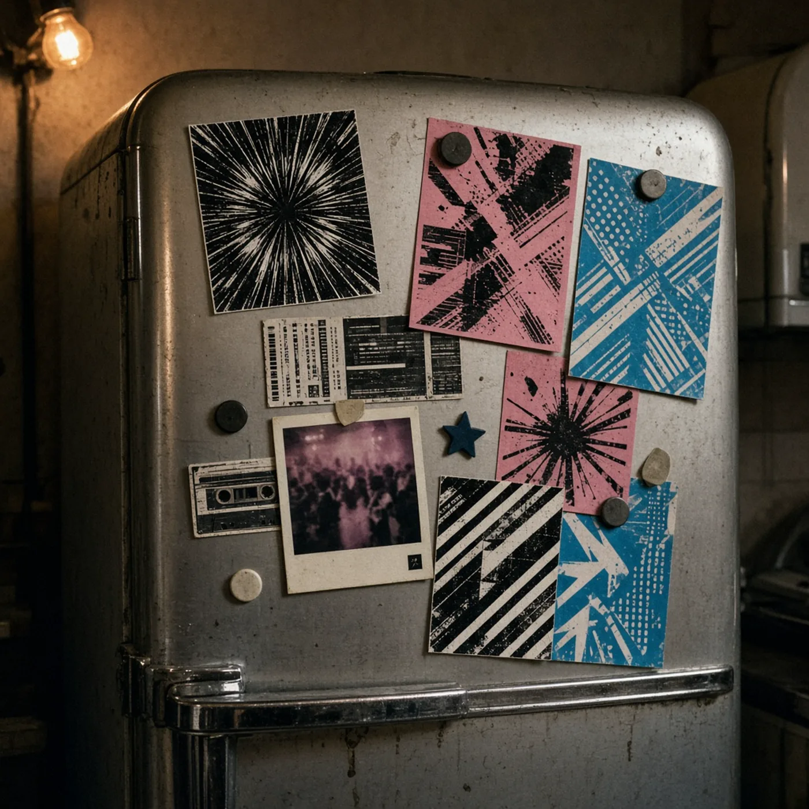

Essay
The Flyer on the Fridge
The flyer was the first pressing of the night: cheap paper, a date, and a record of a room that did not issue one.
- format
- Essay
- date
- Nov 2, 2024
- author
- CJ Archer
- words
- 644 words · 3 min
- photo
- Photo: ultim8 raves
Record culture learned to archive itself with grading, and so it trusts the objects that can be graded. A 12-inch has a matrix number. A flyer has a crease. The crease is closer to the truth of a night than the matrix is, because the night was a few hours in a room and the paper was what the room gave you to carry out. Fridge, wallet, the back of a book, a stub that only says you paid. Ink that wants to leave. This is an unimpressive archive and it is the one most people actually have.
The flyer was the first pressing. Before the recording, if there even was a recording, there was a promise: a date, a lineup, a graphic made too fast, a font someone will later call iconic because it survived. You took it because the night might not be repeated and because someone had written on the back. Diggers who talk first pressings and never talk paper have confused the commodity with the event. The commodity matters. The event is why there was a commodity. Forty-odd dollars for a disco 12-inch is a market. The xerox that smells like the floor is a document of a different market, the one where you paid with your evening.
Paper ephemera has a scholarship, and club music barely uses it. Theatre keeps playbills. Sport keeps tickets. Dance music, suspicious of institutions and bad at funding libraries, keeps what individual packrats kept. The packrats are doing the work of a museum without the climate control. When a shop or a fashion brand tries to sell a decade back to the people who lived it, the flyer on the fridge is the rebuttal. You do not need the reissue. You were there, and the proof is embarrassing and specific: a name spelled wrong, a guest who cancelled, a door time that was a lie. Official history cleans those up. The cleaning is how scenes become brands.
None of this means you should laminate the handbill. Lamination is another kind of grading. It says the paper has graduated from use to relic. Relics do not have to be protected from their own curl. The curl is evidence of a fridge and of summers. An archive that wants everything flat wants everything neutral. Neutral is not what a night was. If you are the person who keeps these things, you are allowed to keep them in a box without becoming a curator. You are also allowed to throw them out. A culture that cannot tell the difference between a person and a librarian is a culture that has replaced memory with inventory.
There is a musical point, not only a sentimental one. Flyers are how you reconstruct a repertoire. Who played, in what order of billing, in what room, next to what other name. Researchers of disco, reggae, and rave who do the work properly use paper because the records do not list the nights. A white label does not say where it was first played. The flyer might. Losing the paper means losing the map of how songs moved through cities. Discogs will not save you. Discogs knows editions. It does not know that a dubplate was heard by two hundred people on a Thursday and then never heard in that form again.
So the fridge is a stacks system. It is disorganized and it is local and it outperforms a feed at one task: holding a date still. The takeout menu beside the flyer is part of the same evening’s evidence, if you want to be honest about how nights end. Honest archives include the ordinary. The boys grading vinyl can keep their scale. The paper that cannot be graded is doing a job the scale was not built for. Leave it curled. Know which night it was. That is the whole collection.